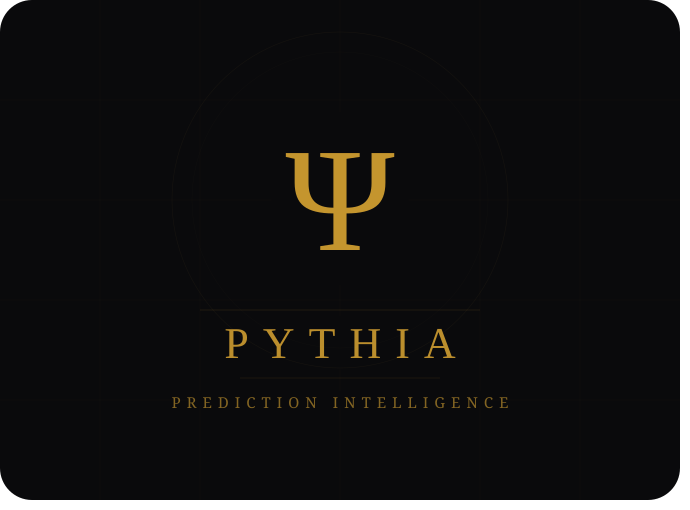

Selected impact
- International markets
- 10+
- Active feeding plans
- 16k
- Fewer emergency escalations
- ~80%
About
I have a keen eye for things that need tidying up—a slow UI, server calls waiting on each other, or a cache doing more work than it needs to. At Colgate-Palmolive and Hill’s Pet Nutrition, that curiosity has taken me across frontend applications, backend services, and the integrations between them. I like digging into why things happen and finding a simpler way for the system to work.
Selected Enterprise Work
-
Hill’s Pet Nutrition
Feeding Calculator — Global Rollout
10+ markets · 16k active feeding plans · 111% of annual conversion target
Led the technical rollout across international markets, strengthened Redis caching, and connected enterprise product data with persisted recommendations.
Read case study -
Hill’s Pet Nutrition
VetReco Project Stabilization
~80% fewer emergency escalations
Removed critical dependencies on individual engineers, documented onboarding, and introduced quality gates and cross-service tracing so any engineer could deploy to production.
Read case study -
Cloud & Integration
SAP to Azure Secure Data Pipeline
Secure integration between SAP and Azure Blob Storage
Built a Node.js integration service with HashiCorp Vault authentication to connect enterprise systems and cloud storage.
Read case study -
Colgate-Palmolive
B2B Commerce Platform Modernization
21% increase in positive customer feedback
Led a legacy frontend overhaul, delivered urgent WCAG AA remediation, and designed a slot-based content system approved for adoption.
Read case study -
B2B Commerce
Local Micro-Frontend Proxy
One local domain for the entire development ecosystem
Built an Nginx reverse proxy with route and port mapping, simplifying local setup and navigation across micro-frontends.
Read case study -
HTH 2.0
Next-Generation Stack Assessment
Architecture adopted as an enterprise template
Evaluated frameworks, state management, and build tooling, then documented the architecture for future external web projects.
Read case study
Selected Projects
-
Python / Data
Pythia: Multi-Agent Research Pipeline

Automated research with validation and fact-checking
Built a Python pipeline combining API ingestion, structured LLM classification, checkpointing, and automated reporting.
Explore project -
Android App
Erratic Drummer

~10k downloads · 4.5/5 Google Play rating
Built a native Android drum-pattern composer, including audio playback and the interface, and managed publication to the Play Store.
Explore project